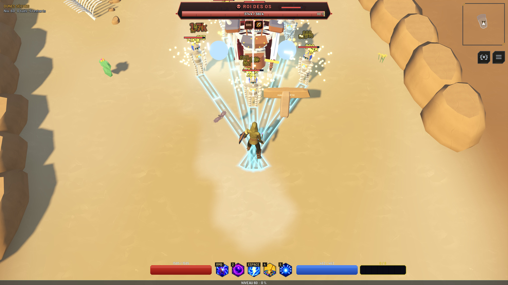

Bestiaries and depths
A handmade bestiary for every act, scenery that comes alive, three acts in early access and real archery.
Every act now has its own handmade monsters, the scenery comes alive and three new acts are open in early access. Archers finally shoot like archers. Have fun!
A bestiary per act
No monster is reused from one act to another: six monsters per act, from the shooter to the kamikaze, and two or three bosses. Wolves and goblin shamans in the forest, mummies and sandstone golems in the desert, lava elementals in the rift, and three new pirates on the coast.

Three acts in early access
Open from the start on the map: the Ashen Spire, a mana sanctuary hanging over a chasm, the Sunken Depths and their reef, and the Blood Castle, its halls and its dungeons.

Living scenery and real archery
Butterflies, fireflies and falling leaves in the forest, tumbleweeds in the desert, geysers in the rift. The bow is held side-on, string drawn to the cheek, and the arrow leaves on release. You can also run while attacking, and the Mobile Casting support lets you move while casting.
Patch notes
Monsters
- A bestiary per act, with no monster reused from one act to another: six monsters per act (melee, shooter, caster, leaper, brute, kamikaze) and two or three bosses, all remodelled and animated.
- Forest: wolves, boars, goblins, goblin archers and shamans, moon-weaver spiders. Bosses: Grumm, King of the Trolls, the Moon-Weaver Queen and Zig-Zag, Great Goblin Oracle.
- Desert: bone dogs, vultures, skeleton archers, mummies, bone colossi, sandstone golems. Bosses: the King of Bones and the Necromancer of the Sands.
- Rift: imps, fire beetles, ash hounds, magma spitters, flame summoners, lava elementals. Bosses: Ignar, Blazing Salamander and Morgrath, Lord of the Rift.
- Coast: crabs, shark sailors, buccaneers and three new pirates — the Gunner, the Tide Witch and the Powder Monkey (a barrel with a fuse). Bosses: King Foam-Claw, Jaws and Captain Ashbeard.
- Bosses have more animations: ground slam, roar, spells, leap, summons.
- Sizes harmonised: monsters are no longer tiny, bosses are about twice your size. Flying creatures stay in the air, and the life bar sits above each monster.
- Eyes, runes, lava and crystals really glow.
Early access: acts V to VII
- The Ashen Spire: a mana sanctuary hanging over a chasm, six maps. Mana fires, crystal golems, spectral knights; bosses: the Archon of the Reliquary and the Crystal Colossus.
- The Sunken Depths: reef, wreck, caves, dunes and trench, shafts of light, schools of fish, turtles. Fish-men, jellyfish, piranhas; bosses: the Kraken of the Depths and the Siren Queen.
- The Blood Castle: halls, apartments, gaols, nave and ramparts. Vampire bats, gargoyles, blood knights; bosses: the Blood Count and the Crypt Beast.
Living scenery
- Forest: butterflies, swallows, fireflies, falling leaves, glowing mushrooms; trees and bushes in the wind.
- Desert: layered sandstone walls, vultures, tumbleweeds, dust devils, nomad camps.
- Rift: lava-veined basalt that pulses, embers and ash, geysers.
- Coast and refuge: palm trees in the wind, gulls, butterflies.
Combat
- New Mobile Casting support: you can move while casting, at reduced speed (the penalty shrinks with level).
- Run while attacking: the legs run while the upper body attacks or casts, the pelvis turns towards the direction of travel.
- Archery remade: side-on, arm extended, string drawn to the cheek, arrow nocked, release. The arrow leaves when the string is released. Rain of Arrows fires in an arc. Between two shots, the stance is held, then the bow is lowered.
- 11 new supports: Crescendo, Division, Far Shot, Deflagration, Charge Reserve, Economy, Mana Siphon, Spell Totem, Unstable Minions, Minion Guard, Penetration.
Progression
- A steadier start: a little more experience is required in the first levels. Talents from level 2, class and passive at level 5, first ascension point at level 8.
- Tree of the Lands opened at the first nightmare tier; its points come from nightmare maps completed for the first time. Acts not yet reached are locked on the map.
Fixes
- No more error when a monster that explodes on death dies just before the detonation.
- Seamless black hole, refuge chest adjusted, padlocks drawn.